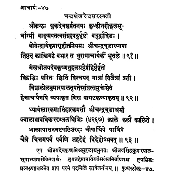

47. आचार्य - 47 - चन्द्रशेखरेन्द्रः
श्रीकण्ठः ••• भूतले ॥ ९१ ॥
मङ्खश्रीजय ••• व्याकृतम् ॥ ९२ ॥
ध्यायंस्तार ••• विदेहोऽभवत् ॥ ९३ ॥
एष ••• सर्वजनीनम् ॥
Śrīkaṇṭha, son of Śukadevaśharma on the banks of the river Kunḍī (Kunṭī) was a drāviḍa (a southerner), eloquent, well-versed in scriptures and courageous; having received the initiation into asceticism from the compassionate preceptor Bodhendra with the name Śrī Candracūḍa, he held the responsibilities of preceptor-ship on earth by remaining in Kāṅci Maṭha.
This preceptor surrounded by eminent scholar-poets Maṅka, Śrī Jayadeva, Kṛṣṇa, Suhala, carrying out digvijaya throughout the earth defeated in debate the exponent of Jainism Hemācārya, whose presence embellished the assembly of King Vidyālola Kumārapāla.
This preceptor Śrī Candracūḍa meditating on the mystic syllable that dispels grief/removes misery, adorning the seat (of preceptor) for sixty-eight years, became Videha by giving up the wondrous physical body on the New moon day in Caitra month of the year Pārthiva in the Kali era 4267.
This renowned preceptor followed Śrī Jayadeva, Kṛṣṇamiśra, Suhala and others, adored by King Jayasimha and Kumārapāla, destroyed the arrogance of the Jaina exponent Hemācārya and attained the final beatitude at Aruṇācala.
